📦 Docker образ. Docker контейнер.
🎯 Цель: Запустить Postman-коллекцию в Jenkins Pipeline
💿 Используемый репозиторий: Reqres API Tests.
📃 Порядок команд и действий:
1. Создать папку, в ней Dockerfile без расширения.
2. Открыть Dockerfile в текстовом редакторе.
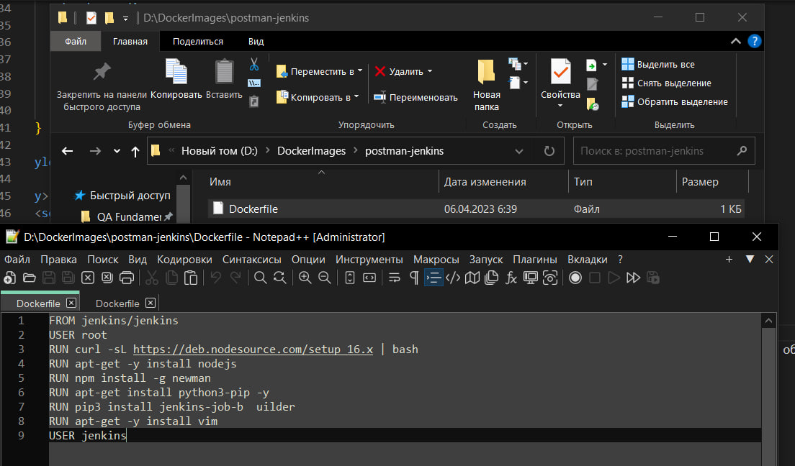
3. Тут прописываем набор команд, которые в последствии выполняются автоматически при сборке образа:
FROM jenkins/jenkins
USER root
RUN curl -sL https://deb.nodesource.com/setup_16.x | bash
RUN apt-get -y install nodejs
RUN npm install -g newman
RUN apt-get install python3-pip -y
RUN pip3 install jenkins-job-builder
RUN apt-get -y install vim
USER jenkins
На данном примере я указываю, что мне нужен jenkins, newman и nodeJS.
🖥 Работа с консолью:
На данном этапе нужно инициировать сборку образа и запуск этих команд.
Для начала запускаю консоль и CD в директорию с Dockerfile, а там:
docker build -t имяОбраза . (обращаю внимание на знак .(точки), это важно).
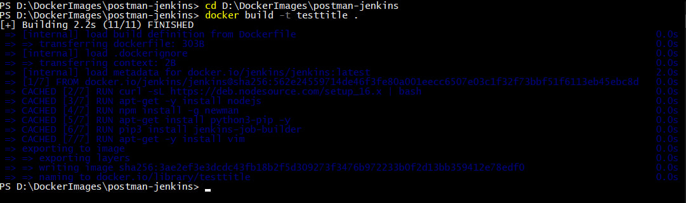
После окончания загрузки можем проверить существующие образы командой docker images
И видим, что наш образ создан и числится в списке.
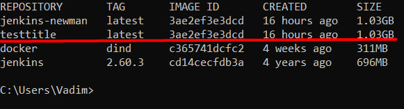
Заключающий шаг в работе с докером - запускаем и присваиваем порт:
docker run -d -p 8080:8080 имяОбраза
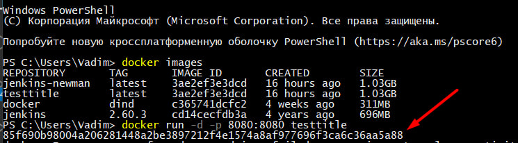
Ошибок нет, контейнер работает. Можно открыть Docker Desktop и проверить это:
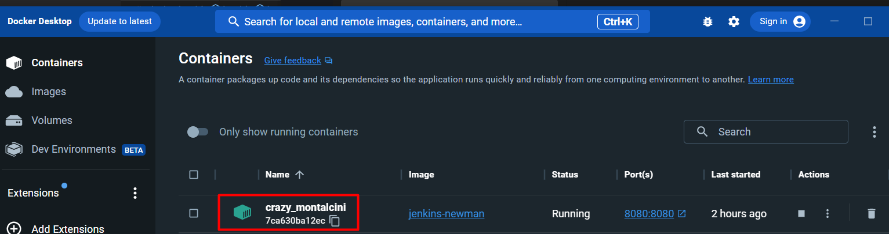
🌐 Прыгаем на localhost:8080:
Нас встречает jenkins, который просит ввести пароль.
Найти его можно в файлах контейнера, использовав команду cat путьКоторыйУказываетДженкинс
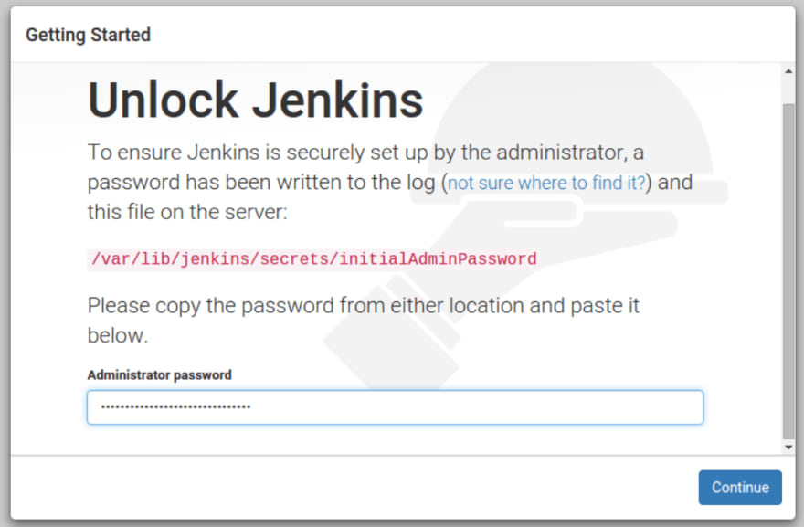
Эта команда прочитает файл, который находится по этому пути, и вернёт значение, некий ключ.
Его копируем и вставляем в поле.
Далее загружаемся используя рекомендованный стаф, предлагаемый jenkins.
⛓ Настройка Pipline:
Для моих задач ничего грандиозного, просто запущу с репозитория postman-коллекцию.
Но для начала нужно создать Pipeline (смотри скрины далее).
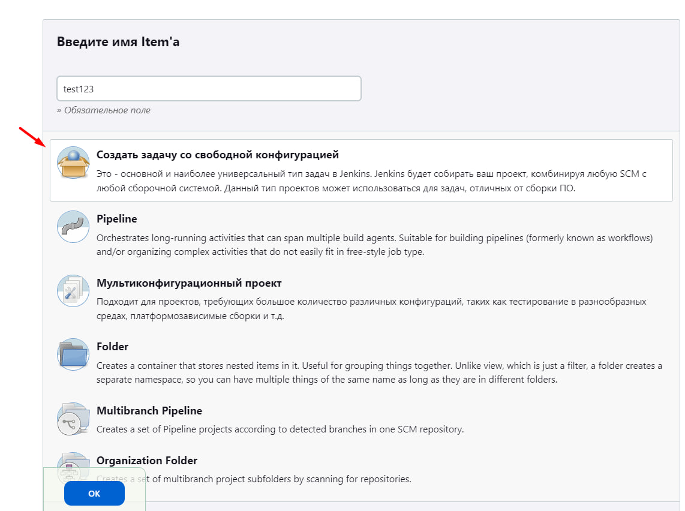
Настройки для Pipeline:
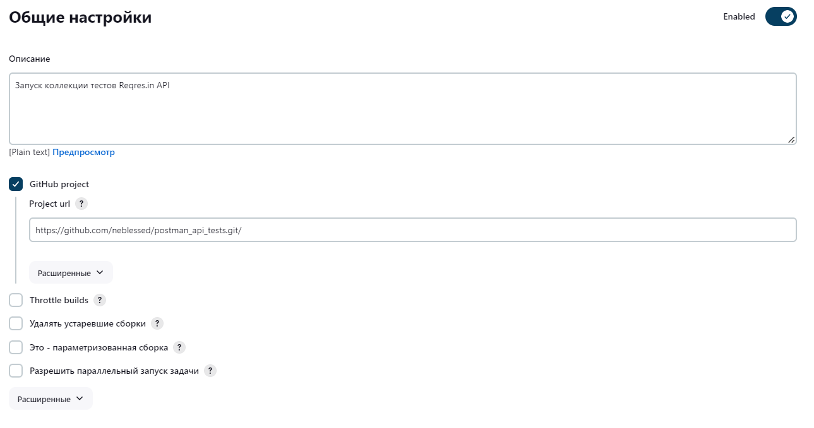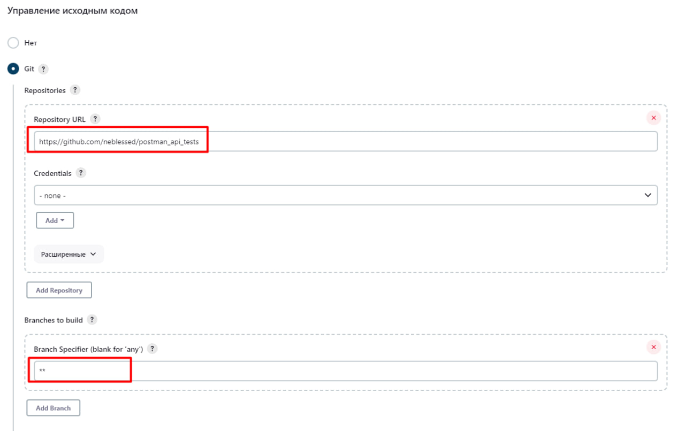
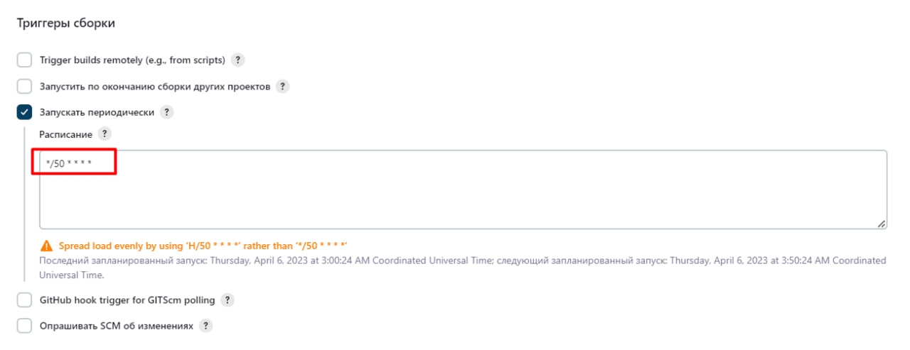
Выше я указываю триггер - sheduler, то есть запуск тестов в определенный период времени.
Поэтому вот дополнительная информация по формату записи и обозначениям:
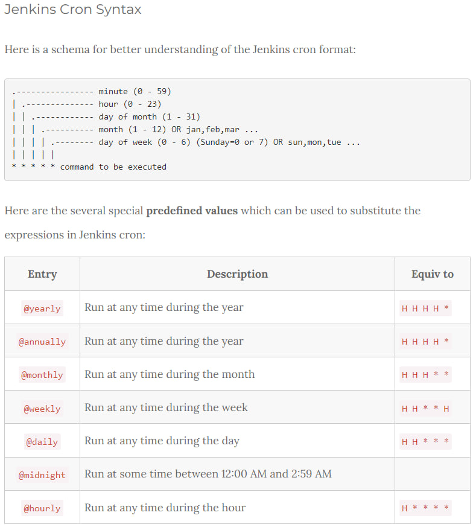
Ну и самое главное, настройка скрипта:
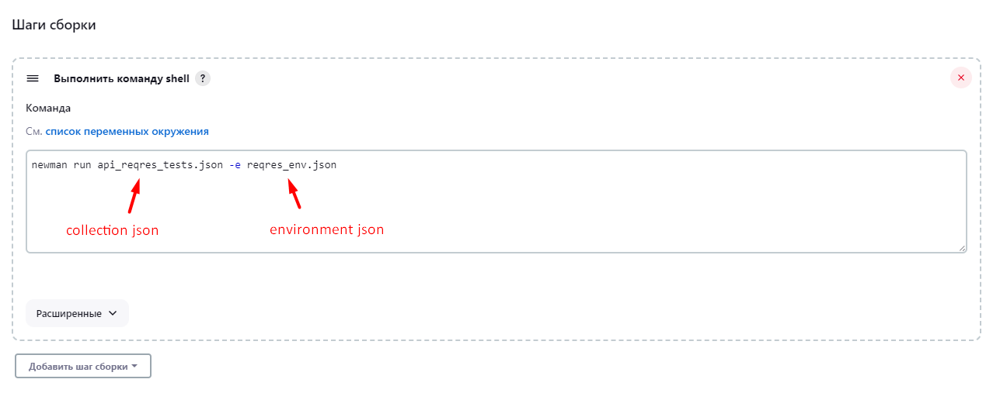
Теперь остаётся лишь сохранить и нажать на кнопку "Собрать сейчас".
Собралось успешно.
Итоги отработки Pipline:
В консоли отображаются результаты тестов, а так же выводятся тесты, которые упали и причину падения.Задача выполнена, можно идти пить чай с печеньками.
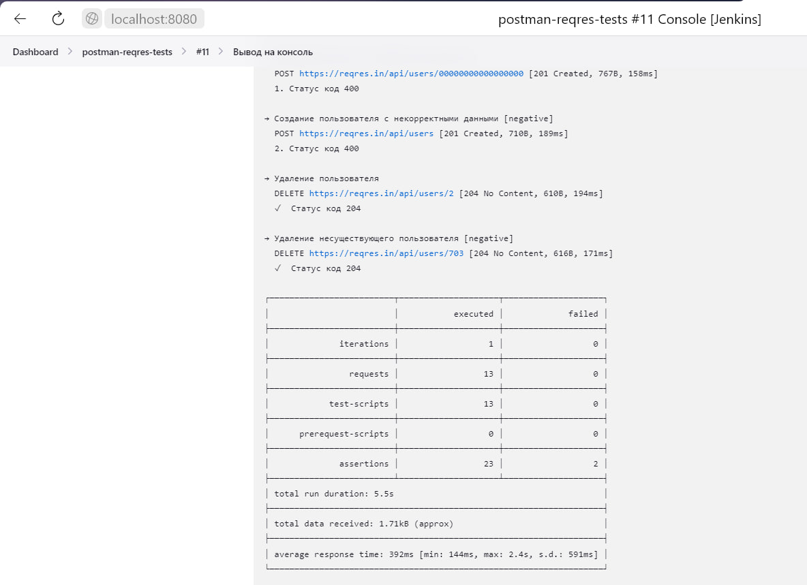